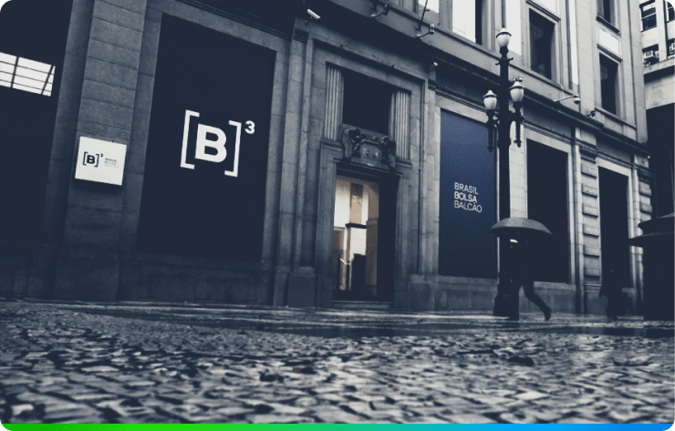

.png)
O que é Bovespa?
Bolsa de valores de São Paulo
A Bovespa, ou Bolsa de Valores de São Paulo, é o principal mercado de negociação de ações no Brasil. É onde investidores compram e vendem ações de empresas listadas, funcionando como um ambiente onde a oferta e demanda determinam os preços das ações. Também conhecida como B3, foi fundada em 1890, sua sede localiza-se no centro da cidade de São Paulo.
Bovespa no cotidiano
Participação na vida dos brasileiros
A bolsa de valores tem se tornado cada vez mais relevante na vida dos brasileiros de diferentes maneiras:
- Investimentos pessoais
- Aposentadoria e estabilidade financeira
- Educação financeira
- Participação em IPOs (Oferta pública inicial)
- Impacto econômico
Relação com outras bolsas
A Bovespa, como uma das principais bolsas de valores do mundo, mantém relações e interações com outras bolsas globais de diversas maneiras:
- Intercâmbio de informações: A Bovespa mantém canais de comunicação e cooperação com outras bolsas de valores ao redor do mundo.
- Interconexão de sistemas: Muitas bolsas têm sistemas interconectados isso permite que investidores comprem e vendam ações de empresas listadas em outras bolsas sem a necessidade de intermediários.
- Negociação de ativos internacionais: A Bovespa oferece aos investidores a oportunidade de negociar ativos internacionais, como ações de empresas estrangeiras.
- Cooperação regulatória: A Bovespa trabalha em conjunto com outras bolsas de valores e reguladores financeiros em questões de supervisão e conformidade regulatória para garantir a integridade e a transparência do mercado.